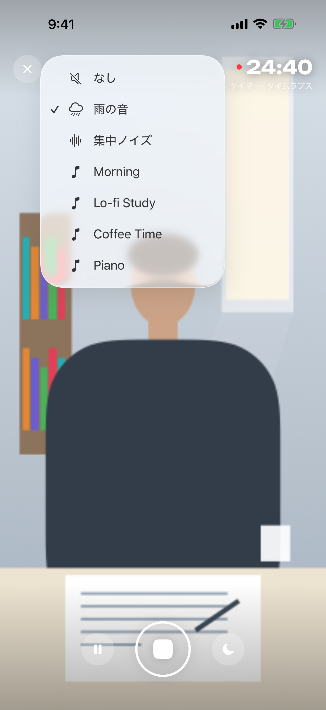
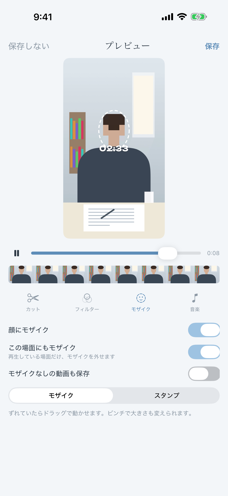
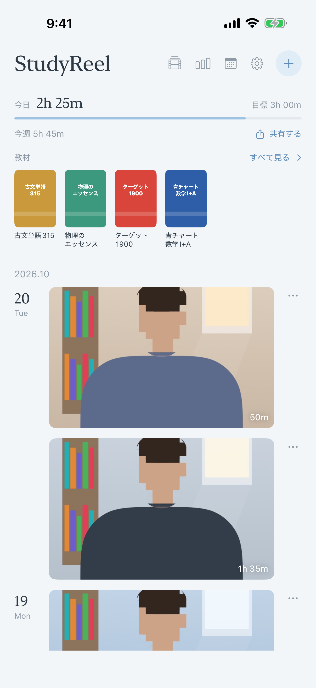
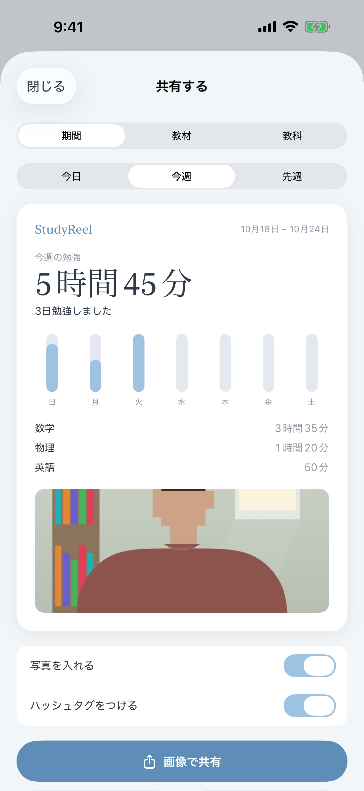
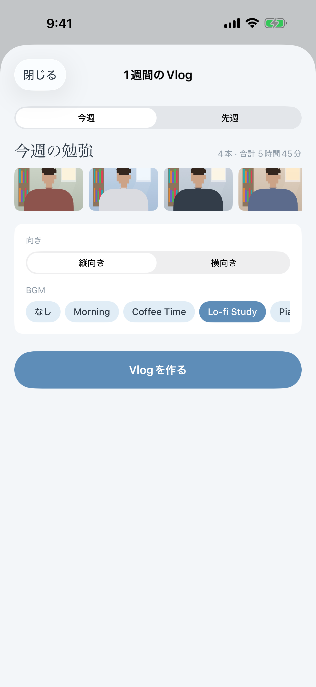

StudyReel
勉強を、記録する。
study with me ♡
0 1
机に置いて、
始めるだけ。
雨の音や集中ノイズを流しながら

00:00
0 2
顔はモザイクで、
しっかり隠せる。
カット・フィルター・BGMもかんたん
Tue 10/14 · 2h 25m

0 3
毎日の勉強を、
ギャラリーに。
撮った記録が、日付ごとに並びます

Mon 10/13
Tue 10/14
Wed 10/15
Thu 10/16
0 4
今日の記録を、
勉強垢へ。
今日・今週・教材ごとにまとめて共有

#勉強垢
#studywithme
#StudyReel
Mon 10/13
2h 25m
0 5
1週間が、
1本のVlogに。
毎日の記録を自動でまとめます

StudyReel
勉強を、記録する。
App Store で無料
iPhone / iPad